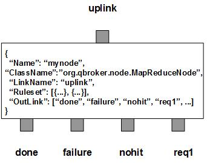

MapReduceNode picks up JMS messages as the requests and creates multiple copies of the message as the requests according to the predefined rulesets. Those newly created messages will be sent to multiple outlinks. The node will collect the responses from them and aggregates the results according to the reduce policies. If all the responses are collected and aggregated, the final result will be loaded to the incoming message as the response. The incoming message will be routed to the outlink of done. In case of failure, the incoming messages will be routed to the outlink failure. If none of the rulesets matches the incoming messages, they will be put to the outlink of nohit. These three outlinks are also called the final exits. The rest of the outlinks are collectibles to fulfill the map requests.
MapReduceNode contains a number of predefined rulesets. These rulesets categorize messages into non-overlapping groups via the property filter. Therefore, each ruleset defines a unique message group. If the associated outlink is none of the fixed outlinks and Aggregation is defined in a ruleset, it is a ruleset of map/reduce. There may be other parameters for the map and reduce operations. For example, TimeToLive and Quorum are two important parameters for the reduce process.
The aggregation on responses is defined in BodyAggregation. It supports the first, last, append for text, and merge for JSON or XML payload, etc. In case of merge for JSON payload, JSONPath is required in the map. JSONPath defines a JSONPath expression that is used to select the data from the responses. The selected data will be merged as a child node to the parent node in the aggregated JSON. In case of merge for XML payload, XPath is required in the map. XPath defines an XPath expression that is used to select the data from the responses. The selected data will be merged as a child node to the parent node in the aggregated XML.
The default map process is to copy the message body as the request for each selected outlink. The selected outlinks are defined via the list of SelectedOutLink. If it is defined in a ruleset, its member can be either the name of an outlink or a map containing LinkTemplate and FieldName, etc. If it is not defined for a map-reduce rule, the request will be duplicated to all collectibles. If a member of SelectedOutLink is a map, the value of LinkTemplate will be used to determine the name of the outlink dynamically or statically, depending on whether it contains variables referencing to certain properties of the message. The value of FieldName will be the property name of the message for the request. In this case, the node formats the request out of message and sets the result to that property. Therefore, it can contain Template and Substitution. This way, each outlink may have its own request.
You are free to choose any names for the three fixed outlinks. But MapReduceNode always assumes the first outlink for done, the second for failure and the third for nohit. The rest of the outlinks are for responses. It is OK for those three fixed outlinks to share the same name. Please make sure each of the fixed outlinks has the actual capacity no less than that of the input XQueue.
Apart from the common properties, there are some implementation specific properties for MapReduceNode.
| Property Name | Data Type | Requirement | Description | Examples |
|---|---|---|---|---|
| RCField | string | optional | name of the property storing the return code | RC (default: ReturnCode) |
The aggregation operation is executed via the pre-defined rulesets. Therefore, the configuration of the rulesets is critical to the operations of MapReduceNode. Here are complete properties of rulesets for MapReduceNode.
| Property Name | Data Type | Requirement | Description | Examples |
|---|---|---|---|---|
| Name | alphanumeric with no spaces | mandatory | name of the ruleset | event |
| TimeToLive | integer | optional | timeout in sec for requests | 300 (default: 60) |
| Quorum | integer | optional | minimum number of success | 2 (default: 0 for all success) |
| Aggregation | list | required for aggregation | list of aggregations | see example |
| BodyAggregation | map | required for aggregation on message body | for body aggregation parameters | see example |
| SelectedOutLink | list | optional | list of name for selected outlinks or a map for map operations | see example |
| PreferredOutLink | alphanumeric with no spaces | mandatory for bypass only | name of the preferred outlink | bypass |
| JMSPropertyGroup | list | optional | list of pattern groups on properties to select messages | see example |
| XJMSPropertyGroup | list | optional | list of pattern groups on properties to exclude messages | see example |
| PatternGroup | list | optional | list of pattern groups on body to select messages | see example |
| XPatternGroup | list | optional | list of pattern groups on body to exclude messages | see example |
| StringProperty | map | optional | for displaying message properties (not implemented yet) | see example |
| Displaymask | integer | optional | mask to display collected messages in logs | 6 (default: 0) |
{
...
"Ruleset": [{
"Name": "bypass",
"PreferredOutLink": "BYPASS",
"JMSPropertyGroup": [{
"JMSType": "^score$"
}]
}],
...
}
where it sends the messages to the outlink of BYPASS without processing them.
Here is an example of the mapreduce ruleset with aggregations:
{
...
"Ruleset": [{
"Name": "feed",
"JMSPropertyGroup": [{
"path": "."
}],
"TimeToLive": "60",
"DisplayMask": "64",
"Aggregation": [{
"FieldName": "ReturnCode",
"Operation": "first",
"DefaultValue": "0"
},{
"FieldName": "SQLResult",
"Operation": "sum",
"DefaultValue": "0"
}],
"BodyAggregation": {
"Operation": "merge",
"XPath": "//Record"
}
}],
...
}
Here is an example of BodyAggregation for XML.
{
...
"BodyAggregation": {
"Operation": "merge",
"XPath": "//president"
},
...
}
Here is an example of BodyAggregation for JSON union oeration.
{
...
"BodyAggregation": {
"Operation": "union",
"JSONPath": "Record",
"KeyTemplate": "##FOLDER##/##PATH##/##MTIME##",
"KeySubstitution": "s/\\.0$//"
},
...
}
where KeyTemplate and KeySubstitution is used to retrieve the unique key from
the data.
Here is an example of MapReduceNode:
{
"Name": "node_mapreduce",
"ClassName": "org.qbroker.node.MapReduceNode",
"Description": "map/reduce query results",
"Operation": "mapreduce",
"LinkName": "feed",
"Capacity": "128",
"DisplayMask": "0",
"Debug": "1",
"Heartbeat": "10",
"Ruleset": [{
"Name": "query",
"DisplayMask": "70",
"JMSPropertyGroup": [{
"type": "^disk_io$",
"Device": "^sd",
"Count": "^\\d+$"
}],
"TimeToLive": "90",
"SelectedOutLink": ["pgsql", "mysql"],
"Aggregation": [{
"FieldName": "ReturnCode",
"Operation": "first",
"DefaultValue": "0"
}],
"BodyAggregation": {
"Operation": "merge",
"XPath": "//Record"
}
},{
"Name": "jmx",
"JMSPropertyGroup": [{
"name": ".",
"pubURI": "^panda[1-4]$"
}],
"TimeToLive": "60",
"Quorum": "3",
"DisplayMask": "0",
"SelectedOutLink": [{
"LinkTemplate": "jmx_##pubURI##",
"FieldName": "JMX",
"Template": "DISPLAY Catalina:type=Manager,path=/forums,host=localhost activeSessions:sessionCounter"
},{
"LinkTemplate": "jmx_##pubURI##",
"FieldName": "JMX",
"Template": "DISPLAY Catalina:type=ThreadPool,name=http-8080 currentThreadsBusy:currentThreadCount"
},{
"LinkTemplate": "jmx_##pubURI##",
"FieldName": "JMX",
"Template": "DISPLAY java.lang:type=OperatingSystem OpenFileDescriptorCount:SystemLoadAverage"
}],
"Aggregation": [{
"FieldName": "ReturnCode",
"Operation": "first",
"DefaultValue": "0"
},{
"FieldName": "MsgCount",
"Operation": "sum",
"DefaultValue": "0"
}],
"BodyAggregation": {
"Operation": "merge",
"JSONPath": "Record[0]"
}
},
"OutLink": [
"null",
{
"Name": "failure",
"Capacity": "128",
"Partition": "64,64"
},
"nohit",
"pgsql",
"mysql",
"jmx_panda1",
"jmx_panda2",
"jmx_panda3",
"jmx_panda4"
]
}
where there are only two rules. The first one maps requests to two separate
outlinks of pgsql and mysql. The results will be stacked on
top of each other. The second rule maps requests to one of the four jmx_xxxx
links with 3 sub-requests. The results will be merged into a single json text.